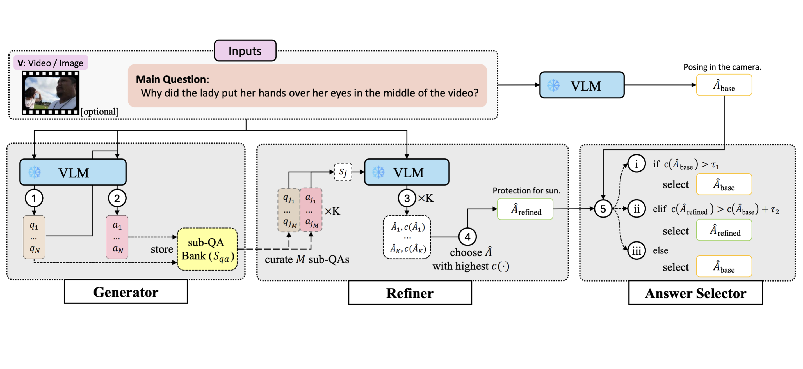
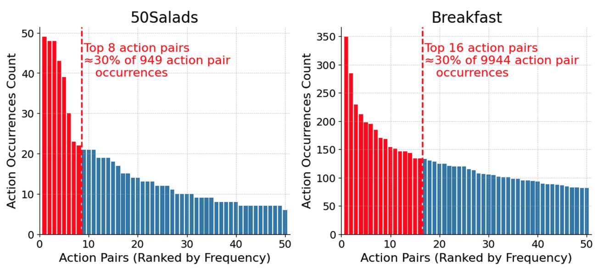
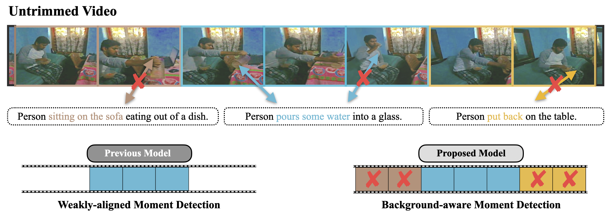
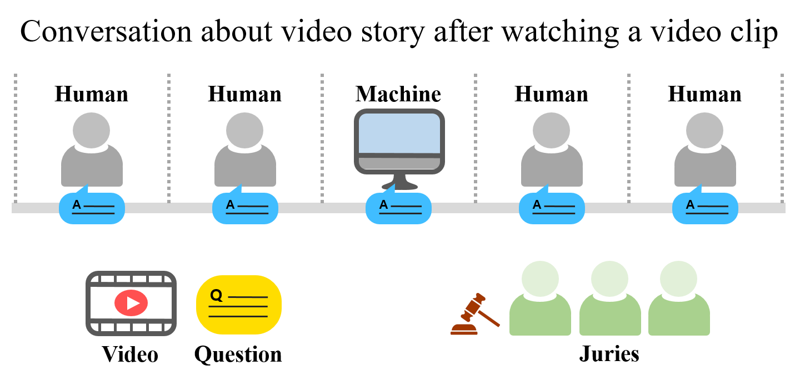

Publications

EvoGround: Self-Evolving Video Agents for Video Temporal Grounding
Neural Information Processing Systems (NeurIPS), 2026
paper /
code /
project page /
We introduce EvoGround, a framework of two coupled self-evolving agents — a proposer and a solver — that learn video temporal grounding from raw videos without any manual labels. Through a self-reinforcing loop driven entirely by reinforcement learning, EvoGround matches or outperforms most fully supervised models across multiple benchmarks.
CS-CLIP: Compositional Scene Graph-guided CLIP for Robust Compositional Reasoning
Empirical Methods in Natural Language Processing (EMNLP) Findings, 2026
paper /
We introduce EvoGround, a framework of two coupled self-evolving agents — a proposer and a solver — that learn video temporal grounding from raw videos without any manual labels. Through a self-reinforcing loop driven entirely by reinforcement learning, EvoGround matches or outperforms most fully supervised models across multiple benchmarks.
EgoExo-Con: Exploring View-Invariant Video Temporal Understanding
European Conference on Computer Vision (ECCV), 2026
*Earlier version has been accepted to
NeurIPS 2025 Workshop on Multimodal Algorithmic Reasoning.
paper /
code /
project page
We introduce EgoExo-Con, a new benchmark comprising synchronized ego-exo video that evaluates a model whether it can maintain consistent temporal understanding across viewpoints. Existing models struggle with this challenge, and we propose View-GRPO for improvement.

Confidence-guided Refinement Reasoning for Zero-shot Question Answering
Empirical Methods in Natural Language Processing (EMNLP), 2025
paper /
We introduce Confidence-guided Refinement Reasoning (C2R), a training-free framework that improves QA across text, image, and video domains by generating and refining sub-questions and answers, and then selecting the most reliable final answer based on confidence scores. The approach is flexible, model-agnostic, and shows consistent improvements across benchmarks.

On the Consistency of Video Large Language Models in Temporal Comprehension
Conference on Computer Vision and Pattern Recognition (CVPR), 2025
*Earlier version has been accepted by
NeurIPS Workshop on Video-Language Models, 2024.
paper /
code
We reveal that video large language models struggle to maintain consistency in grounding and verification. We systematically analyze this issue and introduce an effective training method, Event Temporal Verification Tuning (VTune), leading to substantial improvements in both grounding and consistency.

Exploring Ordinal Bias in Action Recognition for Instructional Videos
ICLR Workshop on Spurious Correlation and Shortcut Learning: Foundations and Solutions, 2025
paper /
code
We study the ordinal bias problem that leads action recognition models to over-rely on dominant action pairs, inflating performance and lacking true video comprehension. We provide an in-depth analysis of this issue and discuss directions for mitigating its effects.

Background-aware Moment Detection for Video Moment Retrieval
Winter Conference on Applications of Computer Vision (WACV), 2025
*Early accepted in Round 1 (167/1381~12.1%).
paper /
code
We propose Background-aware Moment Detection TRansformer (BM-DETR), which carefully adopts a contrastive approach for robust prediction. BM-DETR achieves state-of-the-art performance on various benchmarks while being highly efficient.

PGA: Personalizing Grasping Agents with Single Human-Robot Interaction
International Conference on Intelligent Robots and Systems (IROS), 2024
paper /
code
We propose Personalized Grasping Agent (PGA), which enables robots to grasp user-specific objects from just a single interaction. PGA captures multi-view object data and uses label propagation to adapt its grasping model without requiring extensive annotations, achieving performance close to fully supervised methods.

Modal-specific Pseudo Query Generation for Video Corpus Moment Retrieval
Empirical Methods in Natural Language Processing (EMNLP), 2022
paper /
code
We propose Modal-specific Pseudo Query Generation Network (MPGN), a self-supervised framework for Video Corpus Moment Retrieval (VCMR). MPGN captures orthogonal axis of information in videos and generates pseudo-queries that provide a considerable performance boost, even without human annotations.

Stagemix Video Generation using Face and Body Keypoints Detection
Multimedia Tools and Applications (MTAP), 2022
paper /
code
We design a method for automatically creating Stagemix videos, which seamlessly combine multiple stage performances of a singer into a single cohesive video. We effectively produces natural-looking Stagemix videos while significantly reducing the effort involved compared to manual editing.

Toward a Human-Level Video Understanding Intelligence
AAAI Fall Symposium Series on Artificial Intelligence for Human-Robot Interaction, 2021
paper
We aim to develop an AI agent that can watch video clips and have a conversation with human about the video story.